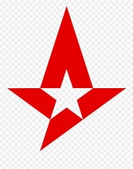
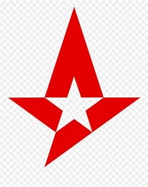
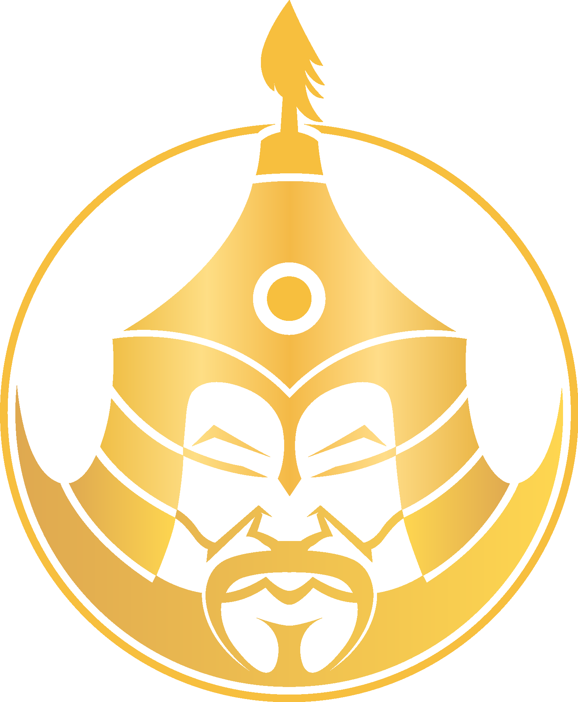
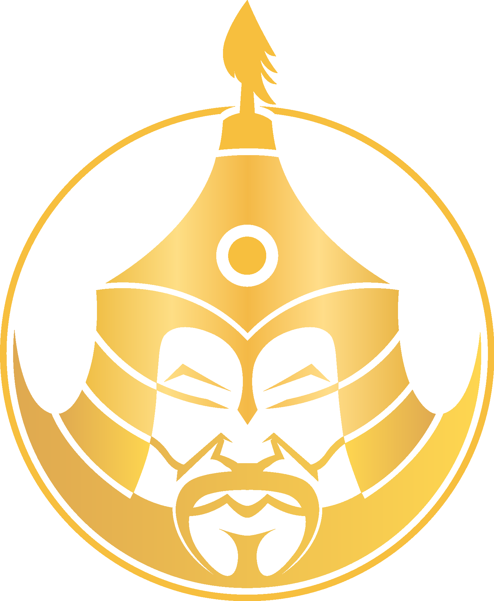

Múlttól a jelenig
A Counter-Strike múltját az SK Gaming legendás 1.6-os sikerkorszaka alapozta meg, amely a korai e-sport-profizmus szimbólumává vált. A CS:GO érában az Astralis felülmúlhatatlan dominanciája határozta meg a játék fejlődését, új standardot állítva a taktikában és a precizitásban. A CS2-ben ma a Vitality képviseli a legkomplettebb elit csapatot, ZywOo vezérletével és modern, gyorsabb metára szabott játékrendszerével. Közben a MongolZ friss, kiszámíthatatlan stílusa bizonyítja, hogy tehetség bárhonnan érkezhet, és radikálisan formálhatja a metát. Ezek együtt egy olyan fejlődéstörténetet rajzolnak ki, ahol minden korszak újradefiniálja a versenyjáték határait. A jelenlegi mezőny egyre élesebb versenyt hoz, ahol az innováció és az adaptáció a túlélés kulcsa. Mindez azt vetíti előre, hogy a jövő legnagyobb sikercsapata az lesz, amely egyszerre épít a múlt örökségére és a meta folyamatos megújítására.
CS1.6: SK Gaming


.jpg "Csapat Logó")
A statisztikák és összesített díjazások szerint SK Gaming az egyik legsikeresebb korai Counter-Strike csapat volt. Az SK Gaming neve egyet jelent a régi Counter-Strike aranykorával. A 2000-es évek első évtizedében ők voltak az egyik első olyan szervezet, amely professzionális, fizetett, nemzetközi csapatként működött — ebben az időben ez ritkaság volt. SK nem csak nyert, hanem lényegében formálta az e-sportot, mind szervezeti, mind játékosoldalon. 2003–2004-ben és később 2011-ben is – a világ élvonalába tartozott. A legnagyobb Counter-Strike-játékosok közül sokan innen indultak legendává.
| 2003 | 2004 |
|---|---|
| CPL Summer , CPL Winter | CPL Winter, WCG |
| 1. Helyezés | |
CS:GO: Astralis


 

Nincs igazán vita: a Peak Astralis minden idők legjobb CS:GO csapata. A teljesítményük egyszerűen páratlan. Elég csak a képesítésükre ránézni – négyszeres Major-bajnokok, és közülük három győzelem zsinórban született, amit azóta sem tudott senki megközelíteni. Ez nem csupán eredménylista, hanem történelem: az Astralis korszak egy olyan dominancia volt, amilyen ritkán születik bármilyen e-sportban. Az Astralis újraformálta, hogyan kell Counter-Strike-ot játszani. Ők voltak azok, akik forradalmasították a utility-használatot: a precíz gránátkiosztások, a tökéletesen időzített flash-ek, a pixelpontos smokesorozatok mind az ő stílusukhoz kötődnek. A játékuk nem csak lövésről szólt – hanem a térkontrollról, az információ kezeléséről, a döntéshozatalról, és arról, hogy hogyan lehet egy teljes mérkőzést matematikai pontossággal felépíteni.
| 1. Helyezet | - | 2. helyezet | - |
|---|---|---|---|
| ELEAGUE Major 2017: Atlanta (2017) | FACEIT Major 2018: London (2018) | IEM Katowice 2019 (2019) | StarLadder Major 2019: Berlin (2019) |
| DreamHack Masters Stockholm 2018 | iBUYPOWER Masters IV 2019 | BLAST Pro Series: Madrid 2019 | BLAST Pro Series: New York 2019 |
CS2: Vitality és MongolZ


 

A CS2 mezőnye ma már nem csak Európa és Észak-Amerika dominanciájáról szól. A Team Vitality és a MongolZ két teljesen eltérő háttérrel érkezett, mégis hasonló magasságokba jutott. Vitality a CS:GO korszak végén már világklasszis szervezet volt, stabil alapokkal. A CS2-re váltáskor azonban keresték a ritmust, és idő kellett, míg újra top formába kerültek. Ma viszont egyértelműen az egyik legkomplettebb, legkiegyensúlyozottabb csapatnak számítanak. ZywOo továbbra is a világ top 1–3 játékosa, igazi carry, aki köré épül minden. A flameZ, Spinx, mezii és ropz alkotta keret tökéletesen illeszkedik a gyorsabb CS2-metához. Kevesebb utility, több egyéni skill – ez a Vitality igazi terepe. A csapat játékstílusa precíz, fegyelmezett, mégis robbanékony. Ezért ma már újra a legveszélyesebb top-tier gárdák között emlegetik őket.
A MongolZ története ezzel szemben igazi e-sport mese. Mongólia sokáig perifériának számított, kevés infrastruktúrával. A MongolZ azonban áttörte a korlátokat, és berobbant a világ élvonalába. Controlez, Techno, Senzu és Mzinho villámgyors döntéseikkel hódítanak. Stílusuk kiszámíthatatlan, nyers lövési erőre épül, ami sok ellenfelet zavarba hoz. Gyorsabb ritmusban játszanak, mint az európai csapatok, ezzel új metát kényszerítve ki. Ez a fajta agresszív, ösztönös játék rengeteg meglepetést okozott már a nagy tornákon. A MongolZ bebizonyította: tehetség bárhonnan érkezhet, nem csak a tradicionális régiókból. Vitality és MongolZ tehát két külön világ, de teljesítményük ma már egy szinten mérhető. Mindketten a CS2 új korszakának meghatározó alakjai – más stílusban, de azonos magasságban.